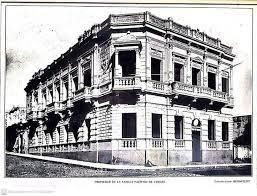

Aspectos Históricos
El coronel del Ejército Brasileño Pacífico De Vargas, quien llegó al Paraguay con las tropas de ocupación en el año 1869, al término de la Guerra contra la Triple Alianza, decidió quedar a vivir en la ciudad de Asunción. Para su residencia en las calles "Del sol" (hoy calle Presidente Franco) y "Convención" (Hoy: calle Juan E. O'Leary) del barrio la Encarnación, encomendó al Constructor Ingeniero Karl Gustaff Rehnfeldt, a finales XIX el proyecto y construcción de su residencia aproximadamente en el año 1888 (no se conoce con exactitud el año). Este palacete, inicialmente fue proyectado y construido para vivienda, con tipología de la época. Posteriormente, el señor Juan Silvano Godoi lo utilizó, primero como vivienda, pero, cómo tenía un patrimonio en libros y obras de arte, lo utilizó como Biblioteca y Museo, y se conoció como "Biblioteca y Museo Godoy".
Con el transcurrir de los años, el edificio fue cambiando de nombre y de usos: 1) Museo de Bellas Artes y Biblioteca Americana Juan Silvano Godoi; 2) Biblioteca, Museo y Archivo Nacional (año 1903,Gobierno de Juan A. Escurra, siendo Director General el señor Juan Silvano Godoy); 3)Biblioteca y Archivo de la Nación; 4) Biblioteca y Museo Godoi; 5) Museo y Arte Nacional, Biblioteca Americana Juan Silvano Godoi; 6) Museo Godoi; 7) COPACAR (Corporación Paraguaya de Carne), 8) Cancillería Nacional, Oficinas. 9) Vice Presidencia de la República-Oficinas (Se construyó sobre el Palacete un nuevo edificio).
Las primeras remodelaciones estuvieron a cargo de un equipo de franceses, quienes, trajeron consigo una serie de cambios, plausibles para algunos, duramente criticados por otros. En el periódico "Correo Semanal " en una entrevista al Dr. Alberto Nogues, quien fuera Ministro interino de Relaciones Exteriores, luego titular del mismo, desde el 9 de marzo de 1976 hasta el 15 de agosto de 1983 (falleció en el año 2001) explicó lo siguiente:
"Cuando la COPACAR iba a dejar el antiguo edificio, se consiguió autorización del Ministerio de Hacienda para realizar algunas reformas en dicho edificio: 1) se demolió la parte de atrás y la idea era, levantar un edificio de tres pisos o niveles, para archivo del Ministerio; 2) Arreglar el resto del edificio de modo a poner en buenas condiciones y convertirlo en despacho del ministro. No se pudieron concretar muchas ideas a falta de dinero, contaron con la colaboración del Ingeniero Celso Velázquez, quien lo asesoró en temas de cimientos, etc. También en la entrevista concedida dijo, que contó con la participación de profesionales paraguayos quienes interpretaron los planos originales realizados por profesionales franceses". También recordó a los molduristas Germán Gómez y Favio García, a Ángel Arce quien se encargó de los capiteles, Contratista Silvio González" La obra demandó varios años de empeño y dedicación. Los vitrales acústicos fueron traídos de Bélgica, los mármoles de Brasil, el piso de parquet lo realizó el especialista en parquets el señor Teodoro Thielmann.
La residencia o palacete consta de dos plantas, posee balcones en planta baja y planta alta, el cual, junto a otras residencias de la época se constituyen en nexos entre el mundo exterior e interior de una residencia, reemplazando a las galerías coloniales. Los balcones eran propios de la tecnología de principios de siglo XX. El auge de los balcones corresponde a la época de la pos Guerra de 1870, cuando surgieron edificaciones tipo palacetes urbanos que implicaban la construcción de dos (2) pisos o niveles. Los balcones en esquina de estilo neoclásico, con coberturas y pilastras, soportes de ménsulas decoradas que sostienen la bovedilla de mampostería.
Así se observa que lo largo de los años, el edificio fue cambiando de usos y de propietarios. Hoy día funcionan las oficinas de la Vice Presidencia de la República del Paraguay.
Descripción Formal: Desde el punto de vista de la tecnología aplicada se observa: El edificio corresponde a construcciones con tipologías constructivas propias de la época del siglo XIX y principios del siglo XX, en que se van acentuando los estilos clasicista y ecléctica que se observan en las fachadas principales de las construcciones respetando los cánones Base, Cuerpo y Coronamiento. También aparece el Barroco, el Art Noveau como decoración en las fachadas principales. Esto se va acentuando en edificios públicos y privados.
En esta época se generaliza la costumbre de construir edificaciones de dos plantas tipo palacetes urbanos. Se respeta y preserva en lo posible los elementos originales en las remodelaciones realizadas en este edificio.
Tipología: Ecléctica
Descripción: El edificio de tres niveles (planta baja, planta alta y terraza), se halla implantado en un terreno, en esquina, con linderos, y sobreelevado con respecto a la calle, edificado sobre límite municipal o vereda. Posteriormente, este magnífico edificio, ha sido restaurado en el interior y exterior, por profesionales: arquitectos e ingenieros, con capacitación en restauración edilicia, pues, a partir del tercer nivel o terraza, se construyó un moderno edificio.
Para la ejecución de la edificación o palacete, se utilizaron materiales propios de nuestro país e importados. Así, se tiene: piedras para cimientos traídos de las canteras ubicadas en el interior y cerca de la capital, ladrillos cerámicos del interior del país, para la mampostería revocada de 0.45m,0,30m,0,15m. y columnas de estilo, muros interiores y exteriores. Los muros de la fachada principal llevan revoque tipo almohadillado. Las aberturas, de madera tipo tablero (puertas y ventanas) poseen vitrales importados, son de madera tallada por artesanos locales, pisos calcáreos y de granito en el interior y galerías internas; y pisos de mármol en acceso principal de escalera e interior. La escalera que se encuentra en el hall principal lleva barandas de hierro forjado y torneadas con hermosos diseños. En la fachada principal, presenta una tipología de esquina con el tratamiento en ochava donde resalta el balcón con baldaquino en la planta alta de estilo italianizante con coberturas y pilastras, soportes de ménsulas decoradas que sostienen la bovedilla de mampostería. También se observa decorados en los balcones y sobre las aberturas, muy propio de la tecnología de principios del siglo XX. En planta baja: La Entrada principal cuenta con una importante puerta de madera tipo tablero de (2) hojas, escalera de mármol, y otra puerta de madera tallada, con detalles de vidrios esmerilados que se abre a un gran hall de distribución y una importante escalera de mármol con barandas, que conduce a los niveles superiores. En este hall se observan columnas de estilo y cielorraso con molduras lineales y sobre los artefactos eléctricos (arañas colgantes) Se observan balcones rectos en fachada principal y lateral. En la planta alta, los demás balcones, están en voladizo, tienen balaustradas de mampostería y soportes de ménsulas decoradas que sostienen la bovedilla de mampostería, además, pilastras adosadas y molduradas, jerarquizando las aberturas conformadas por puertas ventanas de madera y vidriadas. También se observan algunos balcones rectos, y con balaustradas de mampostería.
En el cornisamiento se observa decoración lineal y con otros detalles. Sobre la calle Juan E. O'Leary se encuentra una entrada secundaria, con puerta de madera tipo tablero, cuenta con el tercer nivel o techo conformado por bovedilla catalana y un muro con detalles lineales y detalles de copones sobre pilastras rectas.
Grado de Valoración (Según Ordenanza Municipal JM 35/96)
Grado Valor Arquitectónico:
Comentarios:
El grado de valoración es consignada por la Oficina Centro Histórico de la Municipalidad
de Asunción. Forma parte del Patrimonio Nacional por la Ley 5621/16 Protección del Patrimonio Cultural.La Municipalidad de Asunción lo ha catalogado a través de las Ordenanzas HJM Nº 28/96 y 35/96.
Hacia 1985 fue propiedad del Ministerio de Relaciones Exteriores, que luego de restaurarse el Ex Palacio Benigno López pasó a ocupar ese edificio. Actualmente en este edificio funciona las oficinas administrativas de la Vice presidencia de la República del Paraguay.
Observaciones
Observaciones Con la restauración y Puesta en valor de edificios de valor Patrimonial Nacional, el Ministerio de Relaciones exteriores se propuso rescatar espacios, estructuras, ornamentaciones originales que se han podido preservar a pesar de las diferentes, sucesivas y fuertes intervenciones experimentadas a través del tiempo.
Cuando funcionaba la Cancillería Nacional en dicho edificio, no solo se han restaurado espacios, estructuras, etc. del siglo XIX, sino, que se han dejado testimonios de las intervenciones e inserciones posteriores. El edificio de carácter patrimonial Nacional, se ha respetado los delineamientos sugeridos por expertos nacionales y extranjeros en restauración edilicia, asegurando su preservación en el tiempo para uso de las futuras generaciones.
Bibliografia
Gutierre, Ramón. Evolución Urbanística y Arquitectónica del Paraguay. Año 1537-1911. Ediciones Comuneros. Año 1983. Asunción, Paraguay (página consultada 196-197)
Secretaría Nacional de Cultura
Dirección General de Patrimonio Cultural
- Dirección de Registro de Patrimonio
- -Departamento de Registro de Patrimonio Cultural
Municipalidad de Asunción
- Dirección General de Desarrollo Urbano
- Dirección de Planeamiento-Departamento de Patrimonio Cultural
Enlaces digitales:
www.mre.gov.py
bibliotecanacional.gov.py
Fuente: Patrimonio FADA-UNA thesocietypy.com
www.ultimahora.com - la- asunción-de- antaño
Vinculación con otras fichas
Ficha Nacional de Identificación del Bien Cultural Inmueble-Dirección de Registro de Patrimonio-Dirección General de Patrimonio Cultural de la Secretaría Nacional de Cultura.
Ficha de Inventario de Edificios -Año 1990. -Oficina Centro Histórico - Municipalidad de Asunción
Equipo de trabajo
Catalogador Arq. Mirtha Ibarra C.
Colaboradores Arq.Clarisse Insfrán
Otros Colaboradores Func. Gustavo Barrios Alvarez.
Func. Humberto Battioni
Ente componente Dirección de Registro de Patrimonio
Fecha recolección de datos 01/05/2018
Operador Clarisse Insfrán
Fecha de registro 06/05/2020